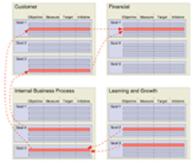

Making
Organizational Change Happen with the BSC
by Ann Nevius, Vice President,
Balanced Scorecard Collaborative (Prelude to the December
18, 11:00 a.m. (Eastern)
FREE Balanced Scorecard NetConference with Ann Nevius.
(To register or see the local time of this event in your
area go to: www.bscol.com/netconferences
for this unique opportunity to hear from the most experienced
practitioners in the business!)
Many organizations have had the experience of investing
significant time and money to roll out a new initiative or
develop a new process, only to see it fail within the first
months. Too many of these failed efforts in an organization
tend to lead to a "fad of the month" syndrome where
employees lose faith in an organization's commitment to execute
change. This is why it is so critical to put the right success
factors in place when beginning the Balanced Scorecard journey.
One such key to success is the Balanced Scorecard Change Agent.
In this article, learn about the role of a successful Balanced
Scorecard Change Agent, and how organizations have used this
approach to drive results with their Balanced Scorecard implementation.
What
is a Balanced Scorecard Change Agent?
A Balanced Scorecard Change Agent is the individual in an
organization who makes change happen through the Balanced
Scorecard and Strategy-Focused Organization Frameworks. More
specifically, a BSC Change Agent is the individual within
an organization who has the job of, first, leading the Balanced
Scorecard design and development effort, and, second, using
the Balanced Scorecard framework to manage leadership processes
and drive change on an ongoing basis. While the BSC design/development
effort must be carried out well for success to happen, it
is the second effort that ultimately drives success for the
organization. It is during this second phase that the Change
Agent makes sure that the effort shifts from "Balanced
Scorecard project" to ongoing "Strategy-Focused
Organization transformation".
BSC Change Agents go by a variety of titles, from "BSC
Manager" to "Transformation Leader." While
the title often reflects the culture of the BSC organization,
it may also say a great deal about the commitment of the organization
to stay the course with the BSC as a sustainable change vehicle.
BSC Change Agents are brought into the role (or create the
role) from a variety of backgrounds. We often observe Change
Agents from Finance, Strategic Planning, Quality, Internal
Consulting, Information Technology, and Human Resources. But
Change Agents can also surface from Line
Operating and Marketing roles.
While Change Agents can be from the organization's executive
team, including the CEO, most often they volunteer or are
assigned from the areas mentioned above. However, whatever
the source, the Change Agent's success largely depends on
a close partnership with a top executive. The most successful
BSC organizations can demonstrate a lasting team relationship
between a C-level executive and the Change Agent. Examples
include Bob McCool (President) and Ed Lewis (CA) at Mobil,
Gerry Isom (President) and Tom Valerio (CA) at CIGNA P&C,
and Scott Goodspeed (President) and Kathy Lucy (CA) at Anna
Jacques Hospital.
The
Role of the Balanced Scorecard Change Agent
The Change Agent has a number of shifting roles during the
lifecycle of the Balanced Scorecard journey. While it is optimal
to have one individual fill all of these roles, in many organizations
two or more people have successfully filled these roles. The
four primary roles are:
- Missionary
- Consultant
- Point Person
- Chief of Staff
The
Missionary is the individual who advocates and "sells"
the Balanced Scorecard and Strategy-Focused Organization concepts
into the organization at the beginning of the journey. While
this Missionary role can be played by an individual at the
top, for example Dr. Peter Person, CEO of Saint Mary's/Duluth
Clinics Health System, more often the Missionary is someone
deeper within the organization who has learned about the BSC,
realized that it will fill a strategic need, and brought the
concept to the attention of leadership.
At one large regional bank in the Mid Atlantic, a line manager
in the Retail Division read about the BSC and instinctively
knew that the framework could help his organization. He then
researched the concept heavily and got the attention of an
Executive VP. Together they decided to bring BSC to the attention
of the Executive Committee. To do this, they contacted Dr.
Robert Kaplan, co-author of the concept and Chairman of Balanced
Scorecard Collaborative (BSCol), who provided them with advice
on how to proceed. They then worked with BSCol to design a
BSC development program, convince the Executive Committee
to buy-in, and launch the journey. This missionary process
took about six months of persistence and constant learning
and education.
The above example demonstrates that, while the Missionary
role can at times be exploratory and time consuming, if successful,
it will contribute to true change within the organization.
The Consultant is the individual who designs the Balanced
Scorecard/Strategy-Focused Organization development and rollout
"project". This individual does everything from
scheduling interviews and workshops to "evangelizing"
and educating, to troubleshooting and keeping the
organization motivated. While the framework of the BSC is
so elegantly simple, the detailed process of developing and
implementing a BSC has many steps that must be tightly orchestrated
for success to occur. Therefore, the BSC Consultant must be
both an exacting project manager and a trusted advisor.
The Program Manager at a large global medical technology
company realized that he had to create a BSC "Center
of Excellence". In other words, he had to create a system
(both electronic and manual) to manage all of the rich and
varied content, process steps, and knowledge management that
are all part of a successful BSC program. He became both "command
central" and "global archives" in the eyes
of his organization. He also became an expert as a "strategic
process design engineer," a critical role in building
the BSC-centric Strategy-Focused Organization. These processes
included Strategic Planning, Budgeting, Strategic Communications,
Performance Management, and Governance.
The Point Person is the individual whose role is to keep
up the momentum necessary for a Balanced Scorecard program,
or any large process change, to take place. This person must
be both a "trouble shooter" and a relentless "enthusiast".
This individual must look for pockets of
resistance and find creative but forceful ways to overcome
them. He/She must have a close working relationship with the
BSC executive champion or leadership team in order to get
problems solved and ensure the necessary resources to make
change happen. And, at times the Point Person must challenge
the executive team to keep up the momentum.
Kathy Lucy, the Change Agent at Anna Jacques Hospital, a
120 bed hospital in Newburyport, MA, is extremely successful
in this role. She is relentlessly persistent in her drive
to make the BSC process successful, and yet uses humor and
tact to convince her leadership to stay the course. To this
end, she calls and enforces regular BSC meetings, structures
regular data updates, and provides strategic insights resulting
from the BSC.
The Chief of Staff is the individual who makes all of the
pieces come together to form a sustainable integrated management
system for the organization. While there is a great deal of
role overlap with the Point Person, the Chief of Staff is
the individual who manages ongoing strategic process improvement
and adherence to the BSC framework. The Chief of Staff makes
the BSC a "way of life" to ensure the future success
of the organization.
Ed Lewis, during his long and effective tenure as BSC Change
Agent at Mobil North American Marketing & Refining, made
sure that every individual, from top to bottom understood
that the BSC was the way to manage at Mobil. He made sure
that the framework became the backbone for all key processes
from strategic planning to communications to performance compensation.
His work contributed greatly to sustainable market success
at Mobil.
Balanced Scorecard Change Agent Attributes and Preparation
While different individuals can take on each of the above
roles in an organization, the best results often occur when
one individual can take on the role of Change Agent throughout
the life cycle of the BSC design and execution. This continuity
in turn supports a consistent and well-integrated BSC experience.
However, as long as the right individuals are put in place
at each of these stages, the organization stands a greatly
increased chance of long-term success.
So,
what does it take to be a successful Change Agent? We
have observed a number of key capabilities:
It is the rare individual who can master all of these capabilities.
And, yet, the BSC is all about strategy execution which is
a program of massive proportions and scope.
What does the Change Agent need in the way of preparation
and access to be successful? We focus on four areas:
- Solid training in the concepts and methodology of the
BSC and SFO
- Clear understanding of the organization's current BSC
- Access to and training in BSC data sources and reports
- Access to and active participation in leadership discussions
on BSC content
It is pretty difficult to manage the processes of strategy
design and execution without the above areas. This point reinforces
the need for the Change Agent to partner with and have the
full support of an executive champion.
Summary: Guidelines
for Success
To become a successful change agent for the Balanced Scorecard
in your organization, follow these key guidelines to ensure
that your organization will more successfully adopt and execute
the Balanced Scorecard, and the longer term organizational
transformation to become a Strategy-Focused Organization.
During the design phase:
- Get the idea in front of people - Be
persistent in researching the concept. Make sure to have
conversations with everyone you can reach in your organization
about the BSC. Provide articles and other readings to key
decision makers.
- Use references - There are many people
around the world and in all industries who have wonderful
things to say about the Balanced Scorecard. Take advantage
of their insights to get your point across.
- Get the scope and definition right -
Many individuals misunderstand the Balanced Scorecard concept
and scope. Be sure that everyone in your organization is
talking about the same thing - a framework for strategically
managing your organization, not just a measurement dashboard.
- Develop organization-specific examples
- Move from theory to real organization examples quickly;
it helps get your ideas across. Get a BSC started in a pilot
department for "proof of concept."
During the execution phase:
- Schedule meetings and events - "Stick-to-it-ivness"
is critical here. Keep the momentum going by scheduling
regular BSC management and communications meetings. Make
sure that the Strategy Map is used in all events.
- Make BSC part of all processes - The
most successful BSC organizations have integrated the framework
into all strategy management processes (strategic planning,
budgeting, organizational communications, individual performance
management and incentives, and governance).
- Communicate often - Don't ever assume
that the "job is done." It requires an ongoing
effort to make the BSC a way of life in any organization.
Constant and reinforced communication is a must.
In summary, the Balanced Scorecard Change Agent role is
a rich and complex one, requiring a variety of capabilities,
skills, and partnerships. However, if it is done well, and
if the Change Agent stays the course, the rewards can be outstanding
both for the organization and the individual.
Other Article:
Cash-Cow
Universities
|